Task 4 - Enable MRF on Border Routers
In this task you will enable Migration Mode on all Border Routers. In addtion, you will apply BGP Migration Community and MRF on all Border Routers.
This BGP Community is needed to avoid routing domain loops with the OMP prefixes on the Default/flat Controller being redistributed into the BGP Core and then re-originated and redistributed back again, but now to the Region-aware Controller as shown in the next Diagram.
This is because Region-aware OMP routes are preferred over default region OMP routes.
Note
The BGP Community we will be using is 12 in an additive manner on all Border Routers and PE routers. The same community will be used for the for the OMP to BGP redistribution.
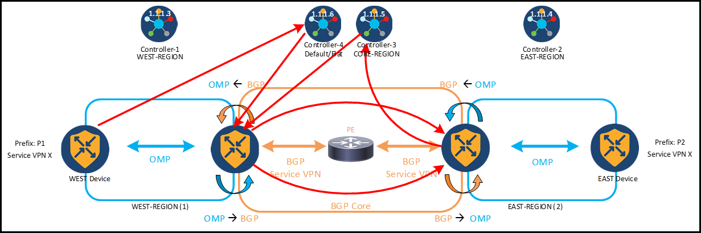
Step 1: Enable "Draft Mode" on all Border Routers
Enabling MRF on Border Router requires multiple feature templates changes, which are traffic disruptive. To mitigate the impact, you will enable “Draft Mode” on all Border routers at Site 201 and Site 202. This will minimize the disruption that these changes might otherwise cause.
- Go to Configuration > Templates and enable “Draft Mode” on both cEDGE_SITE-201_DT and EDGE_SITE-202_DT device templates as follows.
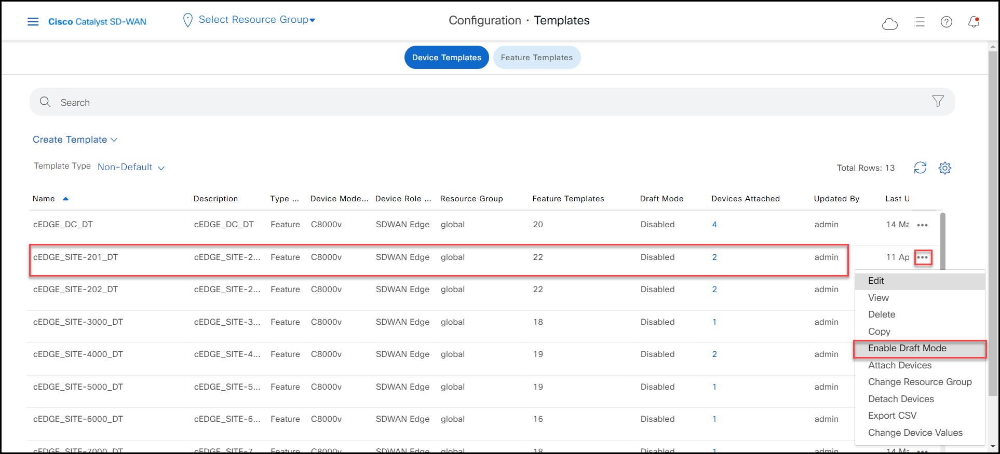
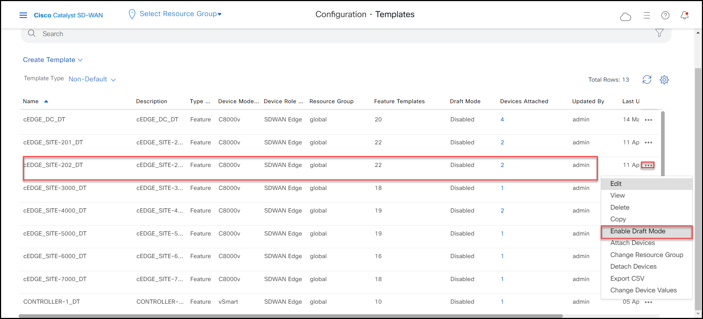
Step 2: Apply BGP Migration Community
- Go to Configuration > Templates > Feature Templates, look up for the cEDGE_HUB_VPN-10_BGP_FT feature template and edit it.
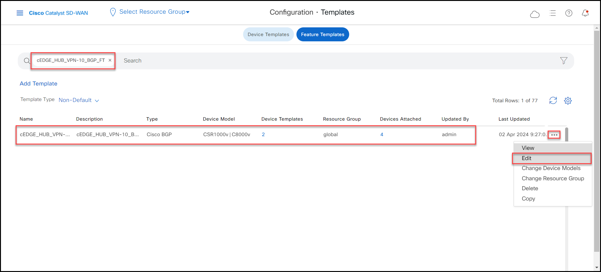
- Make ‘Propagate Community’ Global on as shown below.

*Under ‘Unicast Address Family’, click on pencil icon to edit the OMP redistribution
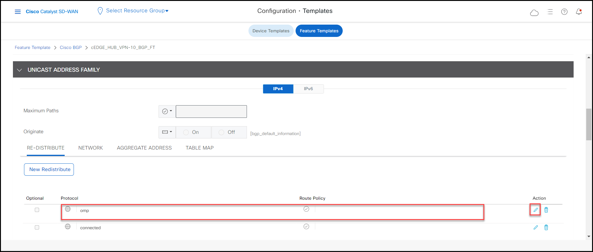
- Add MATCH-MIG-COMM as the Route Policy.

-
Click 'Save Changes'.
-
Now under the ‘Neighbor’ section and click on the pencil icon to edit it.
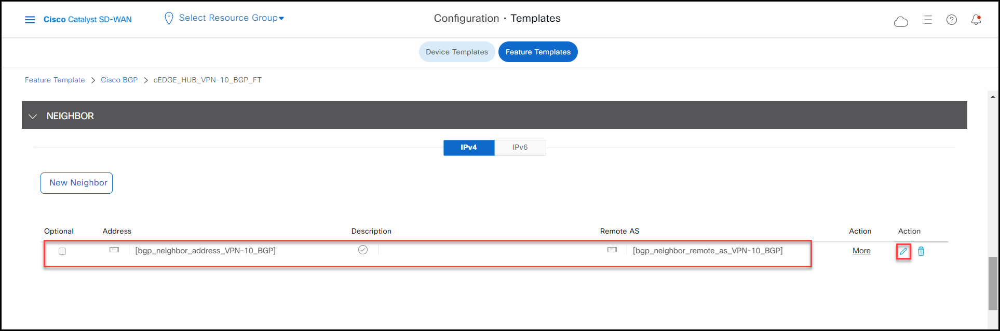
- Make ‘Route Policy Out’ Global "on" to enable out bound route policy. In the ‘Policy Name’ field enter route policy APPEND-MIG-COMM which is pre-configured on the localized policy for simplicity.
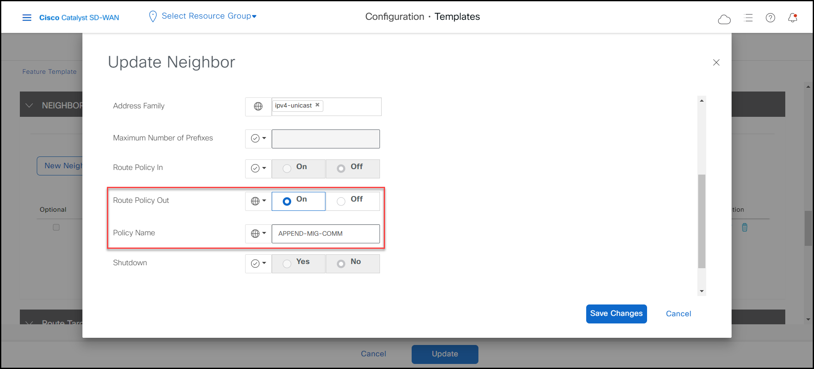
- Click ‘Save Changes’, ‘Update’ then ‘Next’ and then ‘Configure Devices’ to generate the draft configurations for all four East and West border routers.
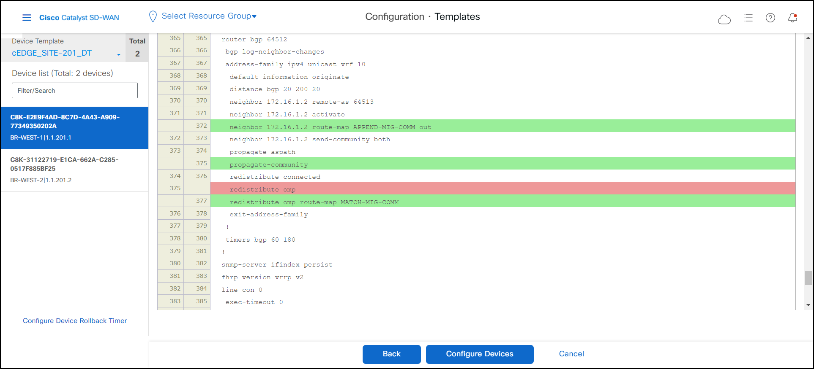
- You should see these status and messages for the draft configuration generated for all 4 devices.

Step 3: Configure MRF on WEST Border Routers
- Go to Configuration > Templates > Feature Templates and create a new C8000v ‘Cisco System’ feature template and name it cEDGE_BORDER-WEST-201_SYSTEM_FT

-
Define all the next parameters as follows:
- Location: “Device Specific”
- Console Baud Rate: 115200
- Region: West-Region
- Role: Border Router
- Enable Migration Mode to Multi-Region Fabric: Enable from BGP Core
- Migration BGP Community: 12
- Latitude: “Device Specific”
- Longitude: “Device Specific”
Note
Location, Console Baud Rate, Latitude and Longitude parameters are not mandatory for MRF, however we define them for lab consistency.
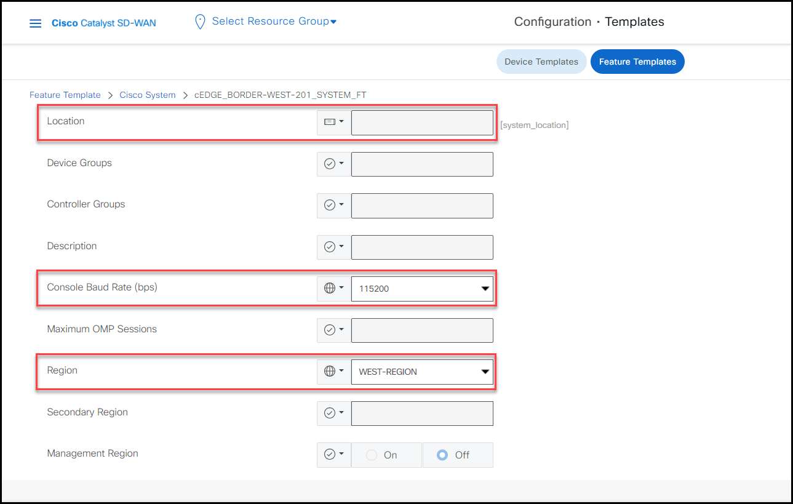

-
Click ‘Save’.
-
In Device Templates look up for the cEDGE_SITE-201_DT device template and click on edit
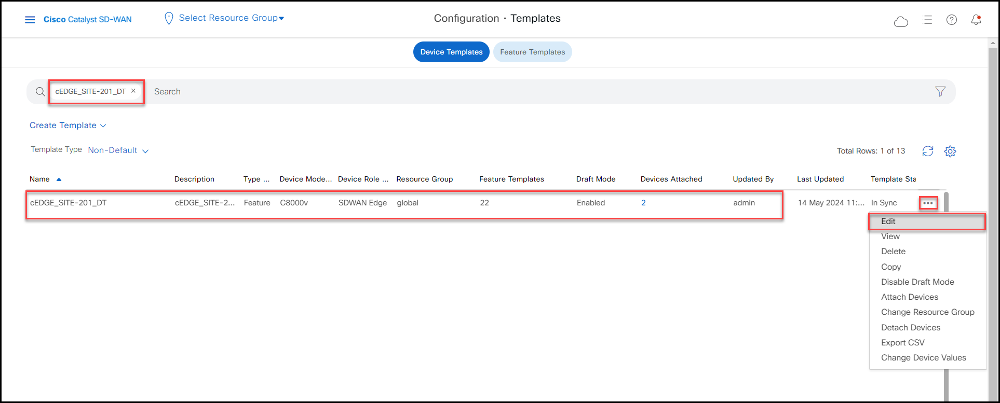
- In the ‘System’ section now select the cEDGE_BORDER-WEST-201_SYSTEM_FT we previously created, then click ‘update’ and push the change.
- This will configure BR-WEST-1 and BR-WEST-2 as the border routers role facing the WEST-REGION.

- Click ‘Update’, then ‘Next’ and confirm in the ‘Config Diff’ section that now both west hubs are assigned to WEST-REGION (1), acting as Border Routers and with the migration mode enabled-from-bgp-core.
- Finally click ‘Configure Devices’ to push the changes.
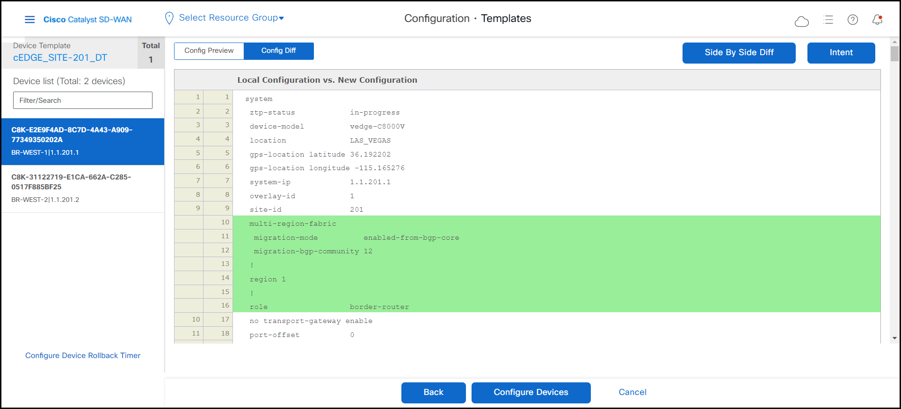
Info
Because the cEDGE_SITE-201_DT device template is still in draft mode, it won’t make any change until we disable draft mode.
Step 4: Configure MRF on EAST Border Routers
Now, let’s repeat the same process for the East Border routers.
- Go to Configuration > Templates > Feature Template, create a new C8000v ‘Cisco System’ feature template and name it cEDGE_BORDER-EAST-202_SYSTEM_FT.
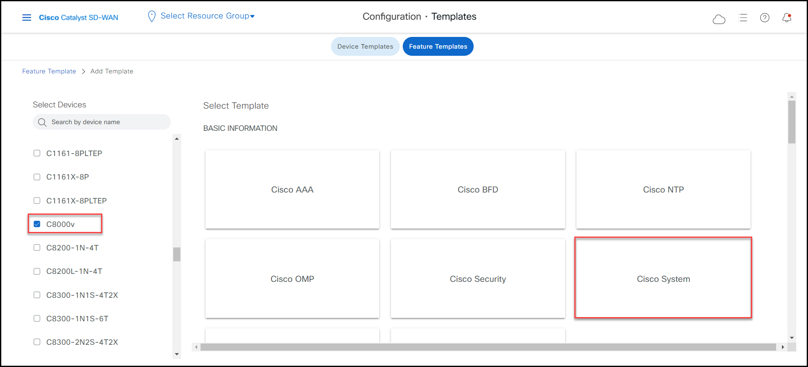
-
Define all the parameters as follows:
- Location: “Device Specific”
- Console Baud Rate: 115200
- Region: East-Region
- Role: Border Router
- Enable Migration Mode to Multi-Region Fabric: Enable from BGP Core
- Migration BGP Community: 12
- Latitude: “Device Specific”
- Longitude: “Device Specific”
Note
Location, Console Baud Rate, Latitude and Longitude parameters are not mandatory for MRF, however we define them for lab consistency.


- In Device Templates look up for the cEDGE_SITE-202_DT device template and click on ‘edit’
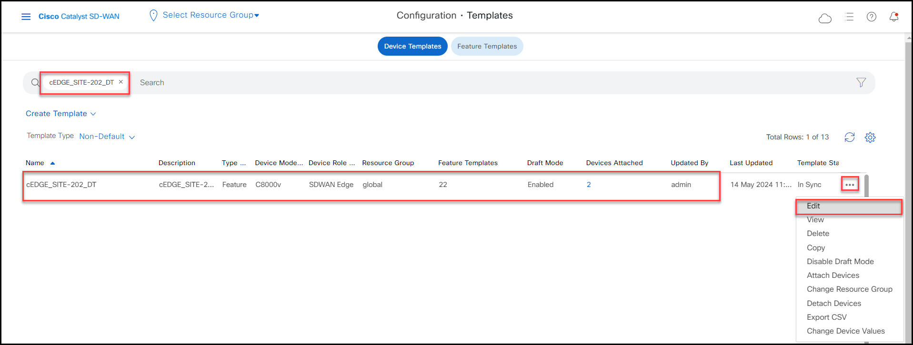
- In the ‘System’ section now select the cEDGE_BORDER-EAST-202_SYSTEM_FT we previously created. This will configure BR-EAST-1 and BR-EAST-2 as the border routers role facing the EAST-REGION.
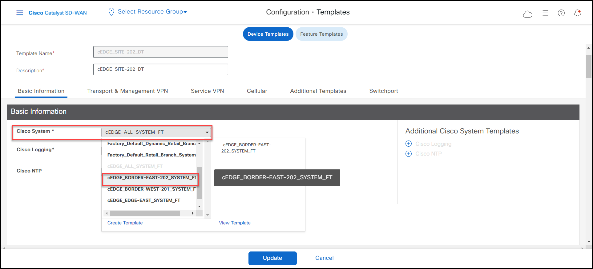
- Click ‘Update’, then ‘Next’ and confirm in the ‘Config Diff’ section that now both west hubs are assigned to EAST-REGION (2), acting as Border Routers and with the migration mode enabled-from-bgp-core.
- Finally click ‘Configure Devices’ to push the changes.

Info
Because the cEDGE_SITE-202_DT device template is still in draft mode, it won’t make any change until we disable draft mode.
- Next enable the Private1 TLOC as Core transport on all Border devices.
- Go to Configuration > Templates > Feature Templates; look up for the feature template cEDGE_SITE-20X_VPN-0_PRIVATE1_CHILD-IF_FT which is shared by all Border devices, and edit it.
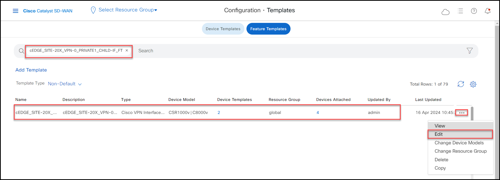
- Under the ‘Tunnel’ section, scroll down and under ‘advance options’ make Global on the ‘Enable Core Region’ parameter.
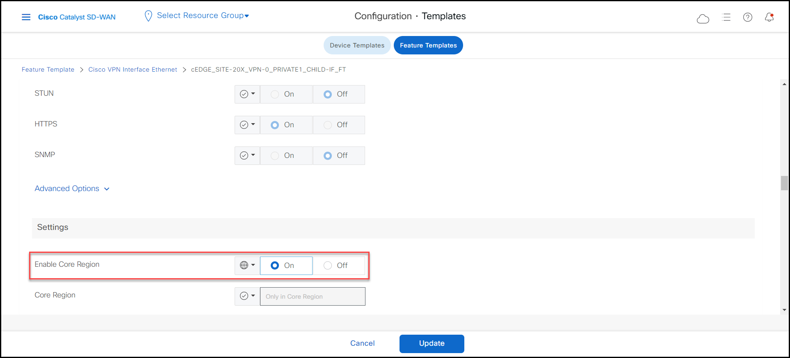
- Click ‘Update’, ‘Next’ and ‘Configure Devices’. This enables Private1 TLOC to service the Core Region.
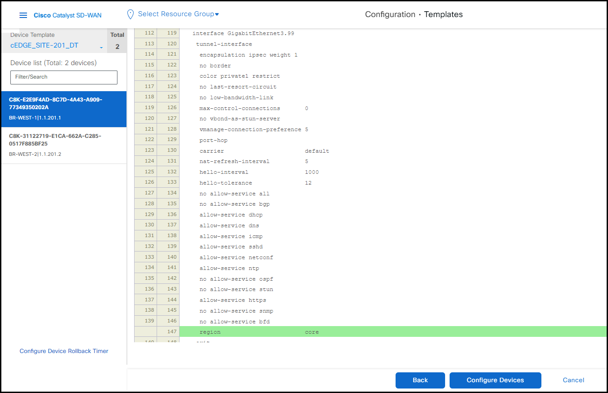
- Finally click ‘Configure Devices’ to push configuration change. Because all Border routers are in “Draft Mode”, it won’t make any change until we disable draft mode.
Step 5: Disable “Draft Mode” and Modify Control Policy
- Click mRemoteNG
 on your desktop, select Site-3000-VPN-10-Ubun and open RDP session to the host with password C1sco12345. Run ping to Ubuntu host in Site 6000 with IP 10.60.1.101.
on your desktop, select Site-3000-VPN-10-Ubun and open RDP session to the host with password C1sco12345. Run ping to Ubuntu host in Site 6000 with IP 10.60.1.101. -
Leave the ping running for connectivity test to measure the impact for this change.
-
Go to Configuration > Templates and click ‘Disable Draft Mode” for cEDGE_SITE-201_DT and EDGE_SITE-202_DT to push all configs you did in step 1 to 4.

Then click ‘Disable” on the pop-up window, then ‘Next’ and finally click ‘Configure Devices’ to push all changes
Note
This change will cause a minor churn in the network, therefore try to disable “Draft Mode” as fast as possible on both device templates to diminish the impact.
Info
You can look the packet loss % of ping test running on the Ubuntu Site-3000-VPN-10-Ubun host in Site 3000
( Repeat the same process to disable draft mode for EDGE_SITE-202_DT*. )
- Verify the new OMP Peers on borders.
-
Go to Monitor > Devices > BR-WEST-1 > Real Time and look up for OMP Peers in the search bar.
-
Because of the previous configurations on west hubs, you can see OMP session to Controller-1 (1.1.1.3) for WEST-REGION (1), Controller-3 (1.1.1.5) for Core Region (0) and the default/flat Controller-4 (1.1.1.6) that is being used for Migration.
- Verify East Border devices, such as BR-EAST-1 and you will see a similar OMP peering with the exception of the Controller-2 (1.1.1.4) that serves the EAST-REGION (2).
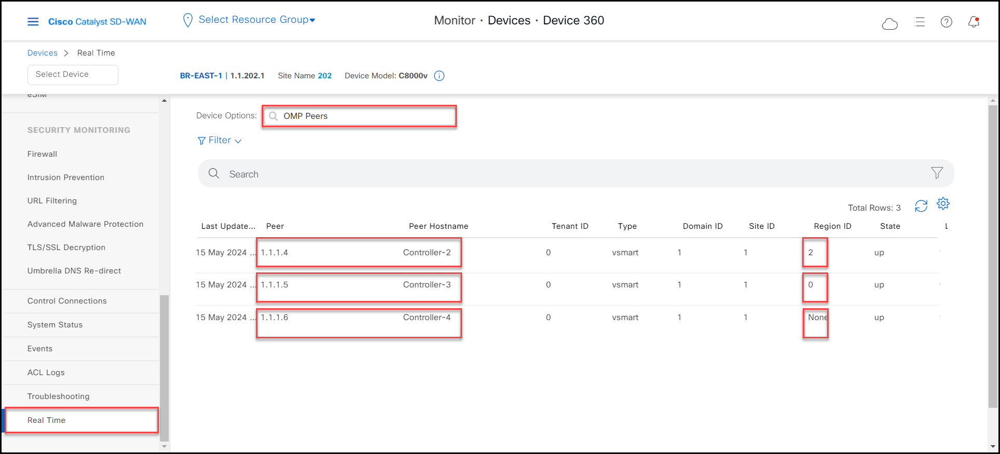
-
Now modify the Centralized Control Policy to allow the Border routers to receive the Private1 TLOCs of each other. This creates a fabric for the Core Region.
-
Go to Configuration > Policies and activate the pre-configured OMP_CORE_TLOCS_POLICY Centralized Policy.

- Click ‘Activate’.
Note
Review the Centralized Policy you just activated, where you now advertise the Core Private1 TLOCs between Border routers, besides its respective Regional Hub & Spoke logic.